Der gezeigte Gerätedialog dient zur Konfiguration der Anzeige der ausgelesenen Daten. Namen der Messwerte können hier geändert werden, sowie Symbol und Einheit. Nicht selektierte Messgrößen erscheinen dadurch nicht in der grafischen Anzeige. Kurven die keine sinnvollen Daten enthalten werden ebenfalls automatisch ausgeblendet. Dadurch wird die Übersichtlichkeit stark erhöht, da keine Kurven ohne Aussage angezeigt werden. Über einen Dateiauswahldialog, erreichbar über "importiere *.txt Datei", können auch neue Dateien Eingelesen werden.
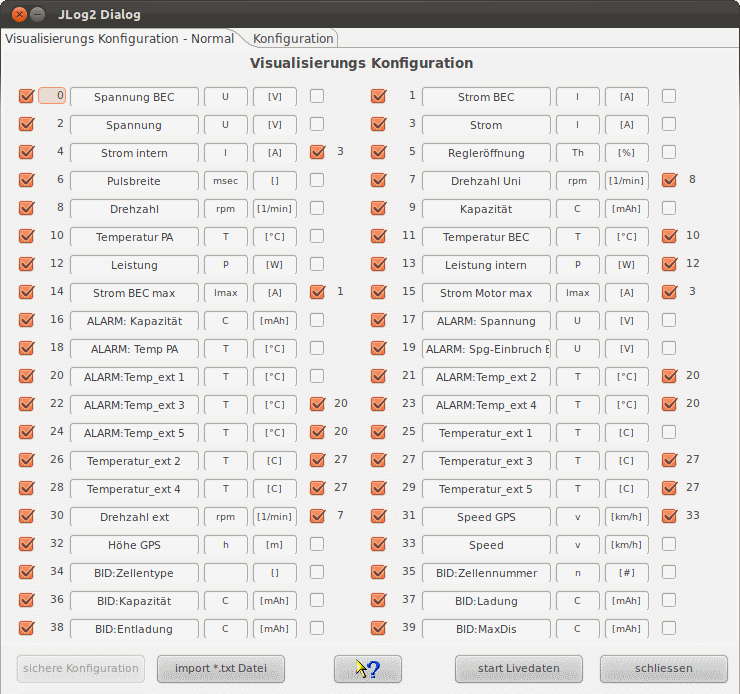
Hinweis: Ist die Anzeige erst einmal konfiguriert, wird diese Anzeigekonfiguration auch angewendet, wenn über die Toolbar mittels "importiere *.txt Datei" in der Toolsleiste der Dateidialog geöffnet und eine Datei eingelesen wird.
Auf der rechten Rand der Anzeigenkonfiguration befindet sich ein zusätzlicher Schalter, der eine halbautomatische Synchronisation der Skalen ermöglicht. Wird hier selektiert wird auf beginnende Namensgleichheit (Temperatur 1, Temperatur 2) geprüft, bei entsprechender Übereinstimmung wird in der Gerätekonfigurationsdatei bei den Messwerten die entsprechende Eigenschaft eingesetzt. Vorsicht ist trotzdem geboten, da hier aktiv in die Anzeige von Daten und deren Skalensynchronisation eingegriffen wird. Die Vorgabe ist aber soweit vorbereitet, dass das selten nötig sein sollte. Funktioniert das nicht automatisch, bleibt immer noch die Möglichkeit das manuell über den Geratekonfigurationseditor einzustellen. Durch Skalensynchronisation wird die verfügbare Anzeigefläche vergrößert und es können Messwertaufnehmer direkt verglichen werden ohne den Kurvenvergleich zu benutzen.
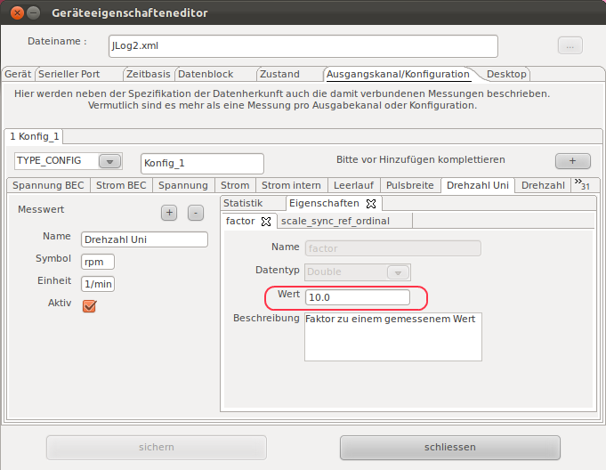 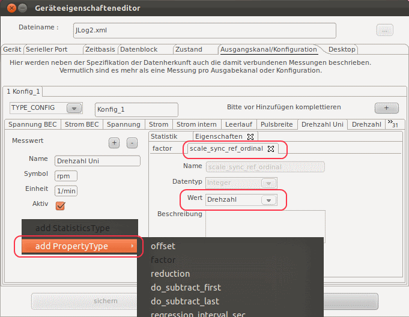
Bei Anschluss nicht vorgesehener Sensoren, z.B. für Temperatur 1-5, kann es erfordelich sein einen Faktor oder Offset zu ändern, bzw. ein zu führen, um den Angeschlossenen Sensor anzupassen. Hierzu ist ebenfalls der Geräteeigenschfteneditor zu bemühnen.
Hinweis: Werden Messwertnamen geändert führt das in der Gerätekonfigurationsdatei zu einer Änderung. Ändert sich in einer späteren DataExplorer Version das Gerätekonfigurationsdateischema (DeviceProperties_Vxy.xsd), wird eine Sichereung aller vorhandenen Gerätekonfigurationsdateien angelegt (Devices_Vxy-1.xsd) und geht nicht verloren. Die veraltete Gerätekonfigurationsdatei kann dann als Vorlage für die neue verwendet werden.
Möchte man Daten direkt beim erzeugen aufnehmen muss ein serieller Port für den JLog2 im Programm konfiguriert sein. Ist das bereits geschehen kann nach Anschluss des USB Interface adapters am System für dei serielle Kommunikation mit dem JLog2 dei Datenaufnahme über "starte Livedaten" beginnen. Das Programm wartet solange bis Daten verfügbar sind und zeigt diese dann sofort an. Wichtig ist, dass der JLog2 und der verbundene Jive Motorsteller auch wirklich angeschlossen sind und ein Motor angetrieben wird. Sonst startet der JLog2 sein eigenes Log nicht. Das Schreiben einer Logdatei auf der SD-Karte kann dabei nicht unterdrückt werden.
Selektiert man den Konfigurationstabulator wird man nach einer CONFIG.txt Datei gefragt, die normaler weise im Wurzelverzeichnis der SD-Karte liegt. Diese Datei wird eingelesen und deren Konfiguration wird angezeigt. Jetzt kann nach Bedarf die Konfiguration verändert werden.
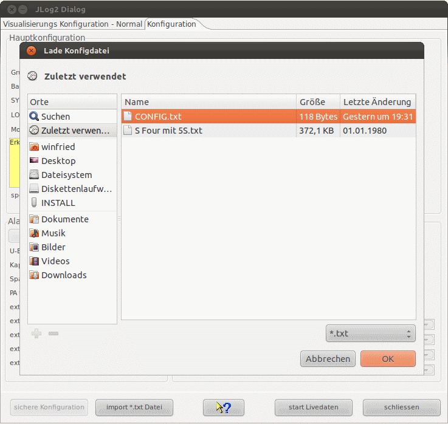 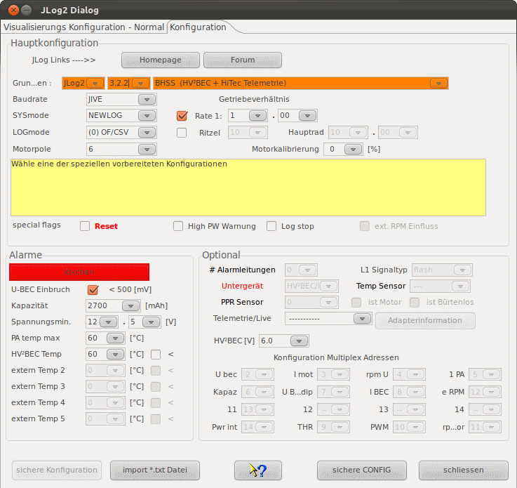
Erst nach Veränderung der Konfiguration wird ein Sichern möglich. Die Datei sollte mit gleichem Namen wieder an die Stelle geschrieben werden von der sie gelesen wurde. Danach kann man die SD-Karte entnehmen und wieder in den JLog2 stecken. In einigen Fällen, wenn andere Geräte mit zur Datenaufzeichnung benutzt werden, die auch als Daten in der JLog2 Aufzeichnung refektiert werden, als Beispiel seien hier der GPS-Logger oder ein Akku BID Chip genannt, sind die angeschlossenen Geräte ebenfalls entsprechen anzuschliessen und/oder zu konfigurieren.
Es ist die entsprechende Telemetrieeinstellung bei der Konfiguration zu verwenden. Dann werden entsprechend der Beschreibung des JLog Telemetriedaten an den Sender übermittelt.
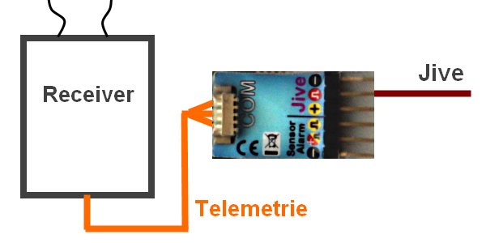
Zur Verwendung mit HiTec Telemetrie ist der JLog entsprechend mit dem Empänger zu verbinden. Dabei auf die pull-up Widerstände achten, sonst erkennt der Emänger die Telemetriedaten nicht auf den Bus.
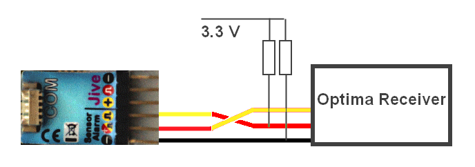
Hinweis: Es können keine weiteren analogen Sensoren angeschlossen werden, der Anschluss von digitalen Sensoren an die COM Schnittstelle ist mölich!
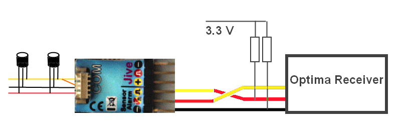
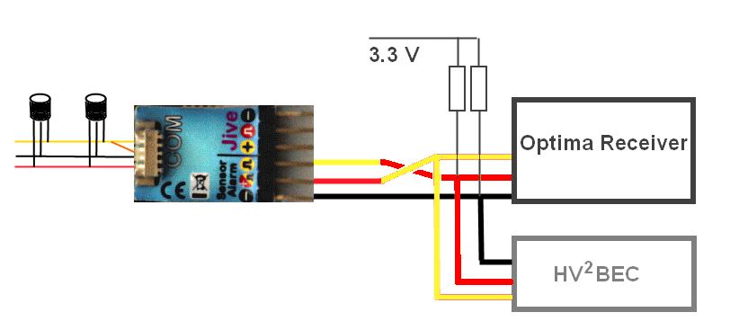
Soll der GPS-Logger als Untergerät angeschlossen werden müssen Mutiplex Adresssen konfiguriert werden, damit der GPS-Logger seine Daten, wie vom JLog2 erwartet, bereitstellt.
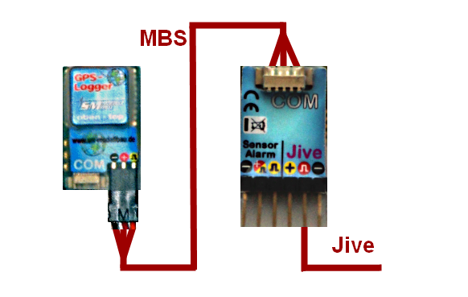
Soll ein Batterie BID Chip als Untergerät angeschlossen werden ist auf den korrekten Anschluss zu achten.
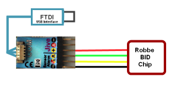
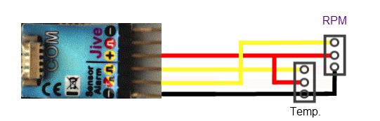
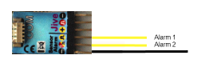
Weitere Hinweise auf JLog Connections